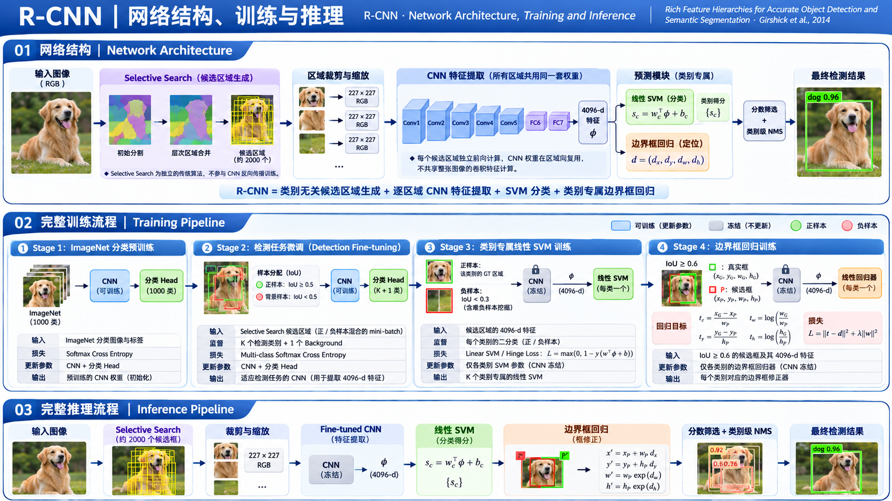

R-CNN 算法原理研究笔记
Rich feature hierarchies for accurate object detection and semantic segmentation · Ross Girshick et al.
先找到可能存在物体的区域，再用预训练 CNN 判断其类别。将深度分类特征迁移到目标检测，是 R-CNN 最重要的研究突破。
2013 年：如何把分类 CNN 用于检测？
先明确研究者已经有什么、遇到了什么困难、提出了什么回答。
AlexNet 在图像分类任务上证明了 CNN 能学习强大的视觉特征，但分类只需回答“这张图是什么”。检测还要找到“哪些位置存在什么物体”，而物体的数量、尺度和位置都不固定。
可以提出候选位置
Selective Search 根据颜色、纹理、区域结构等合并图像区域，得到大量可能包含物体的位置。但它不学习目标类别。
CNN 可以识别图像内容
AlexNet 类网络能学出比 HOG/SIFT 等手工特征更强的语义表示，但最初被用于固定输入的整图分类。

引入深度特征
候选框方法不变，仅视觉特征的升级就带来巨大检测精度提升。
搜索与识别分离
区域算法解决“在哪儿看”，CNN 解决“看到了什么”。
分类预训练 → 检测微调
先在 ImageNet 学到视觉知识，再迁移到标注更少的检测任务。
核心算法原理
沿着一次推理的真实数据流，解释每一步的输入、计算、输出和必要性。
1.1 Selective Search：怎么知道该裁剪哪些区域？
一张图片有无限多个可能的矩形框，R-CNN 为什么只检查约 2000 个？
原版 R-CNN 使用 Selective Search（并非 R-CNN 发明）生成类别无关的候选区域。它先对图像做过分割，得到许多小区域，再按颜色、纹理、尺寸、相邻关系等相似性逐步合并。不同合并策略和尺度会形成不同大小的区域，取这些区域的外接矩形作为候选框。
1.2 Warp：为什么所有候选框都被变成 227 × 227？
原图中长方形、正方形、大框、小框，怎样进入同一个固定输入 CNN？
原论文使用简单的几何变换：先给候选外接矩形留少量上下文，再将其内部像素直接拉伸到 227 × 227。不同宽高比会被扭曲，这是一种精度与实现简单性之间的选择。
这里用的是候选框对应的图像像素，不是将框投影到某张共享 Feature Map 再池化——那是后来的 Fast R-CNN 方向。R-CNN 的每个候选都独立经过 CNN。
1.3 CNN 特征：网络真正输出什么？
CNN 是直接输出“dog + bbox”，还是只负责生成一个更有用的特征？
R-CNN 使用与 AlexNet 相近、经检测任务微调的 CNN。每个固定尺寸的候选 RGB 图独立前向传播，经过卷积层和全连接层，读取 fc7 的 4096 维特征向量。随后使用这些特征训练真正的检测分类器。
特别注意：原版分类 SVM 使用 fc7 特征；原论文描述的 BBox 回归器使用 pool5 特征。这不是现代检测头的统一分类/回归共享输出结构。
1.4 SVM：既然 CNN 已经会分类，为什么还训练 SVM？
“分类 CNN”与“最终检测分类器”是同一个东西吗？
不是。微调 CNN 时会临时使用 21 类 Softmax（PASCAL VOC 20 个物体类别 + 背景），让特征适应检测场景；而原版 R-CNN 的最终检测分数来自按类别训练的线性 SVM。它从 fc7 的 4096 维向量判断“这个区域是不是某一类目标”。
P 是候选框，φ 是 CNN 的 4096 维特征，wc 是类别 c 的线性 SVM 权重；s 是判别得分，不应直接理解为校准的概率。
论文使用独立 SVM 与 Hard Negative Mining（困难负例挖掘），是为了对最终的检测判别边界做专门优化。它不是必须依赖 SVM 的数学定律；后来的 Fast R-CNN 就把分类与回归合并到统一网络训练中了。
1.5 BBox 回归：候选区域不准确，怎样移动到真实目标？
Selective Search 找到“差不多是狗的区域”，但这个框不一定刚好贴合狗的边界。
R-CNN 在获得候选框 P 之后，学习一个从候选到真实框 G 的几何变换：中心位置的偏移以候选宽高归一化，尺度变化使用对数比值。它的预测来自候选区域的 pool5 CNN 特征，再通过类别对应的线性回归器估计这四个量。
tw = ln(Gw / Pw) th = ln(Gh / Ph)
P=(Px, Py, Pw, Ph)；G 是匹配 GT。坐标是中心点与宽高形式，非直接预测四条边。
调节四个滑块，观察平移和缩放如何把初始候选框修正到目标框。这里用像素几何直接演示，不模拟经过训练的回归器参数。
论文中的回归器以正则化最小二乘（Ridge Regression）学习四种变换参数，而不是把 CNN、SVM 和回归器端到端一起优化。使用类别相关回归是因为不同类型目标的框修正规律可能不同。
1.6 NMS：为什么一只狗会产生几十个高分框？
不同候选区域可能都覆盖同一个目标，最后应保留哪个？
R-CNN 对每个类别分别把候选按 SVM 分数排序，保留当前最高分框，删除与其 IoU 高于阈值的其他候选，然后继续处理剩余框。这是 Greedy NMS，不是将重复框坐标求平均。
比如 A、B 的 IoU = 0.8，通常说明两个框大幅重叠；若高于该类别选定的 NMS 阈值，则低分框被抑制。原论文阈值从验证数据选择，而非所有类别统一固定某个值。
完整训练：这四步分别训练谁？
理解原版 R-CNN，必须拆开“CNN 微调”“SVM 训练”“框回归训练”，否则容易误认为它是一个普通端到端检测器。
ImageNet 预训练 CNN
输入：整图裁剪与类别标签
监督：1000 类分类
损失：Softmax 交叉熵
更新：CNN + 分类层
VOC 检测域微调 CNN
输入：warped 候选框
监督：20 类 + 背景
损失：Softmax 交叉熵
更新：CNN + 新 21 类层
训练各类别线性 SVM
输入：固定 fc7 特征
监督：GT 正例、IoU 负例
损失：SVM 间隔目标
更新：SVM 权重
训练 BBox 回归器
输入：pool5 特征及候选框
监督：候选到 GT 的变换
损失：正则化最小二乘
更新：回归参数
2.1 为什么同一个 R-CNN 有两套不同的正负样本定义？
CNN 的检测微调与 SVM 的最终分类，为什么不使用同一套 IoU 阈值？
微调阶段需要大量带类别标签的候选框去适配 CNN：与某个 GT 最大 IoU ≥ 0.5 的候选为该类正例，其他候选为背景。SVM 阶段追求最终检测的高精度判别：只用真实 GT 框作为该类正例；与该类所有 GT 的 IoU 都低于 0.3 的候选才作为该类负例；中间有重叠的候选不纳入该类 SVM 训练。
以 IoU 0.5 为边界；正例参与对应目标类 CE，其他候选按背景参与 CE。
SVM 正例只来自 GT 框本身；候选的 IoU 即使是 0.9，也不会自动成为 SVM 正例。
为什么区别这么大？ 论文补充材料讨论过：微调用宽一些的正例条件使 CNN 见到更多目标外观与位置变化；SVM 使用更严格的正例避免把定位不准的候选直接作为标准正样本。两步解决的训练目标并不相同。
21 类 Softmax + 交叉熵
论文一个 mini-batch 采样 32 个正例与 96 个背景，共 128 个候选框，以缓解背景极多造成的训练不均衡。
每类独立训练 + Hard Negative Mining
在大量候选中，重点挖掘容易被错判为目标的负例；冻结 CNN 特征后训练线性分类器权重。
2.2 回归监督从哪里来？又更新了谁？
BBox 回归不是对所有背景框做 L2 学习，而是需要候选框与目标 GT 的对应。
先把候选 P 与目标 GT G 匹配，构造四个归一化的变换目标 t=(tₓ,tᵧ,tw,th)。回归器以 pool5 特征预测这四个值，最小化预测与目标间的平方误差，并使用 L2 正则约束权重。
这里写的是某一个变换分量的 Ridge 目标，四个变换分量分别学习。φ 是已训练 CNN 提取的特征；优化发生在回归器参数上。
回归的作用是降低定位误差；SVM 在语义上判断“这是不是狗”，并不意味着候选框已贴合狗的真实边界。
| 阶段 | 训练输入 | 监督 / Loss | 更新参数 | 是否需要 GT |
|---|---|---|---|---|
| ImageNet 预训练 | 整图分类样本 | 1000 类标签 / CE | CNN + 分类层 | 分类标签 |
| 检测域微调 | warped 候选框 | 20 类 + 背景 / CE | CNN + 21 类层 | 目标类别和 GT 框 |
| 检测 SVM | 固定 fc7 特征 | 严格正负样本 / SVM 间隔 | 每类 SVM 权重 | GT 框和 IoU |
| BBox 回归 | pool5 特征 + 候选框 | 候选→GT 几何变换 / Ridge | 回归器权重 | 匹配后的 GT 框 |
完整推理：一张新图如何得到最终检测框？
无 GT、无梯度更新。训练好的 CNN、SVM、回归器按规定顺序处理新图像。
框 P = [100, 80, 230, 210]
其裁剪图进入 CNN；fc7 的特征被 dog-SVM 判为高分，pool5 特征引导回归器将框修正到更合理的区域；随后按 dog 类别参与 NMS。
每个候选都要执行 CNN
原版 R-CNN 的 CNN 计算与物体类别数并不成正比，因为特征可供所有 SVM 复用；但与候选数量基本相关。这是其高延迟的核心原因。
历史价值与代价：R-CNN 到底解决了什么？
定义里程碑，不把实验现象误写成“某个组件第一次被发明”。
代表性的传统特征检测基线。
空间金字塔 / 视觉词袋特征的传统区域式系统。
同样使用候选区域，但采用深度 CNN 特征，并进行定位修正。
让 CNN 在整个图像上高效扫位置
多尺度、空间密集预测、共享卷积；核心工程问题是扫描效率与精确定位。更强调共享计算。
把检测变成 CNN 擅长的区域识别
先产生区域，再提取 CNN 特征、分类和修正；核心研究问题是深度特征在检测任务的有效迁移。更依赖候选质量。
| 遇到的问题 | R-CNN 的回答 | 后来暴露的局限 | 推动的研究 |
|---|---|---|---|
| 深度 CNN 主要擅长分类 | 先提区域 → 逐区域识别 | 类别无关的候选需另外计算 | RPN / Faster R-CNN |
| 检测标注数据有限 | ImageNet 预训练 + 检测微调 | 多个训练阶段割裂 | Fast R-CNN 联合多任务训练 |
| 区域数量多，CNN 前向成本高 | 所有区域共享权重与语义表示 | 仍重复进行 CNN 计算 | SPPnet / Fast R-CNN 共享特征图 |
| 候选框未必精确 | 学习候选框到 GT 的修正 | 回归器另训，不能端到端更新 CNN | 统一框回归 Head 与多任务损失 |
arXiv 论文摘要 · CVF 正式论文 · 论文全文 PDF（含补充材料）
对应主要章节：论文 §2（区域提议、特征、检测训练及推理）、§3（消融与定位误差分析）、§3.4（框回归）；附录 / Supplementary Material（回归目标、两套正负样本定义）。为避免混淆，页面将论文原始实现与概念示意分开标注。